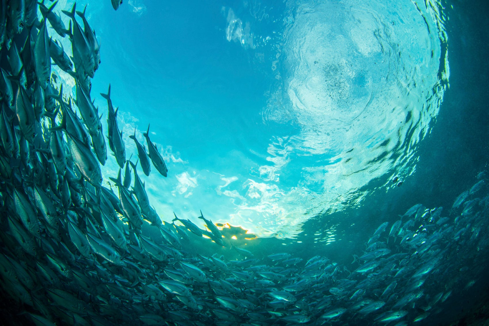

My Experience
Animals
Elena's Favourite Things about the Ocean
The Ocean

The ocean is the body of salt water that covers approximately 70.8% of the surface of Earth and contains 97% of Earth's water.There is only one global ocean. Historically, there are four named oceans: the Atlantic Ocean, Pacific, Indian, and Arctic. However, most countries now recognize the Southern (Antarctic) as the fifth ocean.
- Our oceans cover more than 70 per cent of the Earth’s surface.
With so much of the Earth’s surface taken up by ocean, it’s evident how vital these marine environments are to the planet, and how much there still is to be explored.
- The majority of life on Earth is aquatic.
As so much of the Earth’s surface is underwater, it comes as no surprise that marine species outnumber those on land. But, it’s an incredible 94 per cent of the Earth’s living species that exist within the oceans.
- Less than five per cent of the planet’s oceans have been explored.
According to the Ocean Service, man has explored less than five per cent of Earth’s oceans. As researchers strive to discover more, we’re continually getting to know our oceans better.
- The world’s longest mountain chain is underwater.
Earth’s longest chain of mountains, the Mid-Ocean Ridge, is almost entirely beneath the ocean, stretching across a distance of 65,000 kilometres. It’s said that this mountain chain is less explored than the surface of Venus or Mars.
- There are more historic artefacts under the sea than in all of the world’s museums.
Around 1,000 shipwrecks lie off the Florida Keys alone, some of which are within the Florida Keys National Marine Sanctuary. Other underwater museums have been created in recent years, including the Mediterranean’s submerged bronze statue, Christ of the Abyss.
- We still only know a fraction of the marine species in our oceans.
According to the World Register of Marine Species there are now 240,470 accepted species, but this is believed to be just a small proportion of the species that exist, with new marine life being discovered everyday.
- Over 70 per cent of our planet’s oxygen is produced by the ocean.
It’s thought that between 70 and 80 per cent of the oxygen we breathe is produced by marine plants, nearly all of which are marine algae.
- It’s possible to find rivers and lakes beneath the ocean.
When salt water and hydrogen sulfide combine, it becomes denser than the rest of the water around it, enabling it to form a lake or river that flows beneath the sea.
- Around 50 per cent of the US lies beneath the ocean.
Not only does a large part of the planet exist beneath the ocean, so does the United States – around 50 per cent, in fact.
- The Pacific Ocean is the world’s largest ocean and contains around 25,000 islands.
With 25,000 islands lying within it, the Pacific Ocean has more islands than anywhere else on the planet.